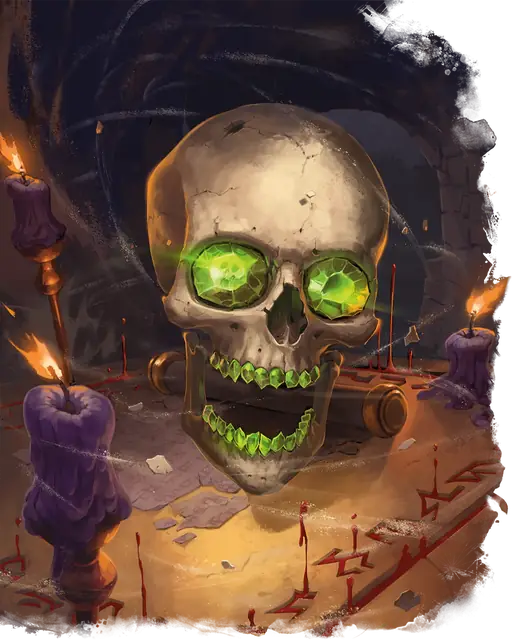

Демилич
Demilich
Крошечная Нежить, Нейтральная Злая

Класс Защиты 20 Инициатива +17 (27)
Хиты 180 (72к4)
Скорость 5 футов, Полёта 30 футов (парит)
| мод | спас | ||
|---|---|---|---|
| СИЛ | 1 | −5 | −5 |
| ЛОВ | 20 | +5 | +11 |
| ТЕЛ | 10 | +0 | +6 |
| мод | спас | ||
|---|---|---|---|
| ИНТ | 20 | +5 | +11 |
| МДР | 17 | +3 | +9 |
| ХАР | 20 | +5 | +5 |
Сопротивление урону Дробящий, Колющий, Рубящий
Иммунитеты Некротический, Психический, Яд; Испуганный, Истощение, Оглохший, Окаменевший, Опрокинутый, Отравленный, Очарованный, Ошеломлённый, Парализованный
Чувства пассивное Восприятие 13, Истинное зрение 120 футов
Языки нет
Опасность 18 (20 000 опыта или 22 000 опыта в Логове; БВ +6)
Особенности
Легендарное сопротивление (3/день, или 4/день в Логове). Если демилич проваливает спасбросок, он вместо этого может в нём преуспеть.
Неживое восстановление. Если демилич уничтожен, он восстанавливает тело и все Хиты спустя 1к10 дней, если за это время на его останки не сотворено заклинание Желание.
Действия
Мультиатака. Демилич совершает три атаки Некротическим выбросом.
Некротический выброс. Бросок рукопашной или дальнобойной атаки: +11, досягаемость 5 фт. или дистанция 120 фт. Попадание: 24 (7к6) Некротического урона.
Вой (Перезарядка 5–6). Спасбросок Телосложения: Сл 19, каждое существо в 30-футовой Эманации, исходящей от демилича. Провал: 70 (20к6) Психического урона. Провал или успех: Цель Испугана до начала следующего хода демилича.
Легендарные действия
У этого существа есть 3 использования Легендарных действий (или 4 использования в его Логове); оно может немедленно после окончания хода другого существа потратить одно использование, чтобы совершить одно из следующих действий. Существо восполняет все потраченные использования в начале каждого своего хода.
Высасывание энергии. Спасбросок Телосложения: Сл 19, одно видимое демиличом существо в 120 футах. Провал: Максимум Хитов цели снижается на 14 (4к6). Провал или успех: Демилич не может совершить это действие повторно до начала своего следующего хода.
Полёт могильной пыли. Демилич облаком могильной пыли летит на расстояние вплоть до его Скорости полёта. Каждое существо, оказавшееся в пределах 5 футов от демилича во время этого полёта, единожды подвергается следующему эффекту. Спасбросок Телосложения: Сл 19. Провал: Существо Ослеплена до конца следующего хода демилича. Провал или успех: Демилич не может совершить это действие повторно до начала своего следующего хода.
Некроз. Демилич совершает одну атаку Некротическим выбросом.
Бонус мастерства +6
Среда обитания Любая
Сокровища Магические
Демилич
Конец пути лича
Демилич — это череп, в котором хранятся остатки злой сущности лича. Когда бремя бессмертия становится невыносимым, его разум погружается в пучины бессознательного, а тело разлагается.
Однако, если его останки потревожить, из них поднимется демилич. Как правило, эти существа выглядят как черепа, украшенные самоцветами и тайными или оккультными символами.
Логова демиличей
Демиличи ревностно стерегут свои святилища, напичканные смертельными ловушками. Самое известное из них — Гробница Ужасов, логово знаменитого Ацерерака.
Местность, в которой находится логово демилича, изменяется из-за его присутствия, что создаёт следующие эффекты:
• Ослабляющие владения. Каждый раз, когда существо, кроме самого демилича и его союзников, завершает Долгий отдых в пределах 1 мили от логова, оно должно совершить спасбросок Телосложения Сл 20; при провале его максимум Хитов уменьшается на 1к4. Это снижение длится, пока существо не завершит Долгий отдых вне этой области.
• Оберег от путешествий. Существа не могут телепортироваться в логово и из него, а также входить в него или покидать его с помощью межпланарного путешествия.
Если демилич умирает или перемещает своё логово в другое место, все эти эффекты мгновенно исчезают.